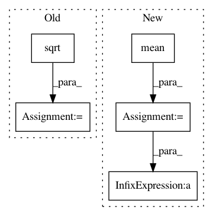

179225cd81199996d724f3333834baef850cbb33,general_function/file_wav.py,,wav_scale,#Any#,27
Before Change
sum=sum+i*i
length=len(energy)
print(length,sum)
m=math.sqrt(length/sum)
e=energy*m
return e
def wav_show(wave_data, fs): // 显示出来声音波形
time = np.arange(0, len(wave_data)) * (1.0/fs) // 计算声音的播放时间，单位为秒
After Change
"""
语音信号能量归一化
"""
means = energy.mean() // 均值
var=energy.var() // 方差
e=(energy-means)/math.sqrt(var) // 归一化能量
return e
def wav_show(wave_data, fs): // 显示出来声音波形
In pattern: SUPERPATTERN
Frequency: 3
Non-data size: 5
Instances
Project Name: nl8590687/ASRT_SpeechRecognition
Commit Name: 179225cd81199996d724f3333834baef850cbb33
Time: 2017-08-29
Author: 3210346136@qq.com
File Name: general_function/file_wav.py
Class Name:
Method Name: wav_scale
Project Name: nilearn/nilearn
Commit Name: 48282d57a0f11094d71c7310898ab347e6b847b3
Time: 2019-03-25
Author: gilles.de.hollander@gmail.com
File Name: nilearn/signal.py
Class Name:
Method Name: clean
Project Name: nipy/dipy
Commit Name: d77d4a471a1ad924ed94275c00d96544f70a5889
Time: 2012-11-09
Author: arokem@gmail.com
File Name: dipy/sims/tests/test_phantom.py
Class Name:
Method Name: test_snr